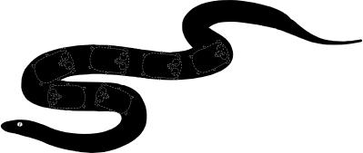

Работа с Go из Python

Обо мне
- Инженер по машинному обучению в
- Опыт Go - 3 месяца
- Опыт Python - 3 года
- Опыт C/C++ - 42 6 лет
 vmarkovtsev
vmarkovtsev markhor
markhor
Что мы делаем
- У нас есть полная копия GitHub-а в Монге
- Всё добро написано на Go и крутится в системе контейнеров docker в Google Cloud
- Мы работаем с тех. директорами IT компаний, которые хантят, и предлагаем им
жемчужины из мира open source
- Тех. директора за это много платят

- Поиск жемчужин можно усложнять насколько хватит фантазии
Проблема
- Ключевая технология нашей компании -
src-d/go-git
- Это (отличная) реализация readonly клиента Git на чистом Go
- Go не предназначен для исследования задач машинного обучения,
хотя некоторые пытаются
- Для go-git нужен мост в мир Python